Entradas
Papa a la Huancaína
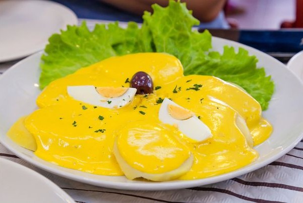Papas con salsa cremosa de ají amarillo, queso fresco y leche.
S/8.00
Sopa Verde
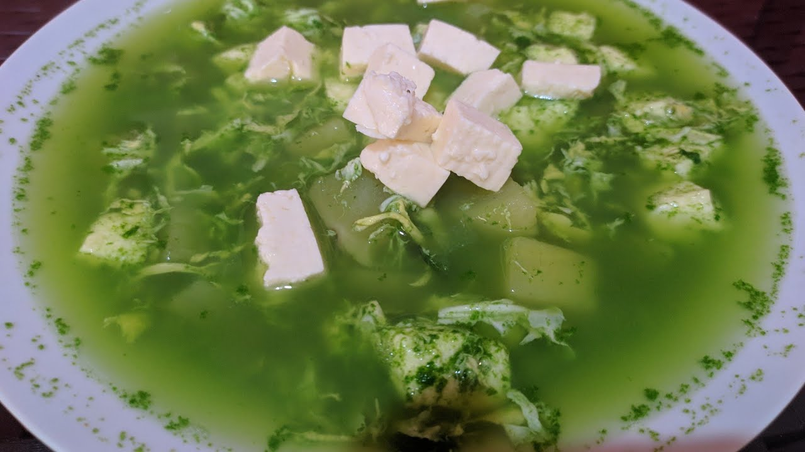Sopa de papa con paico, huacatay y hierbas tradicionales de la región.
S/10.00
Ensalada de Habas
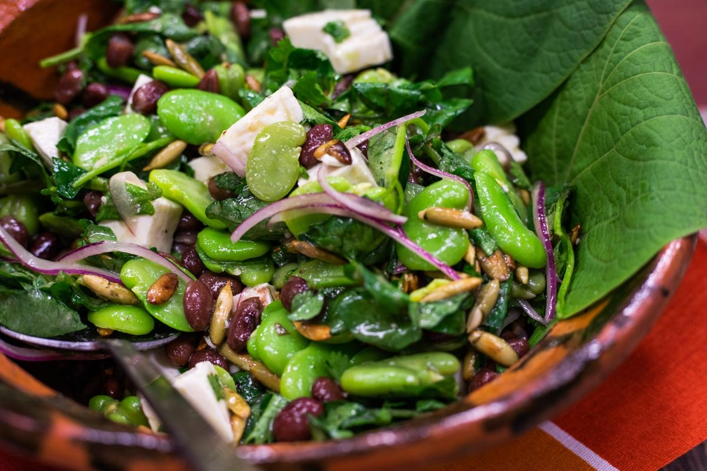Habas cocidas con queso fresco, cebolla, limón y hierbas de la sierra.
S/7.00
Choclo con Queso
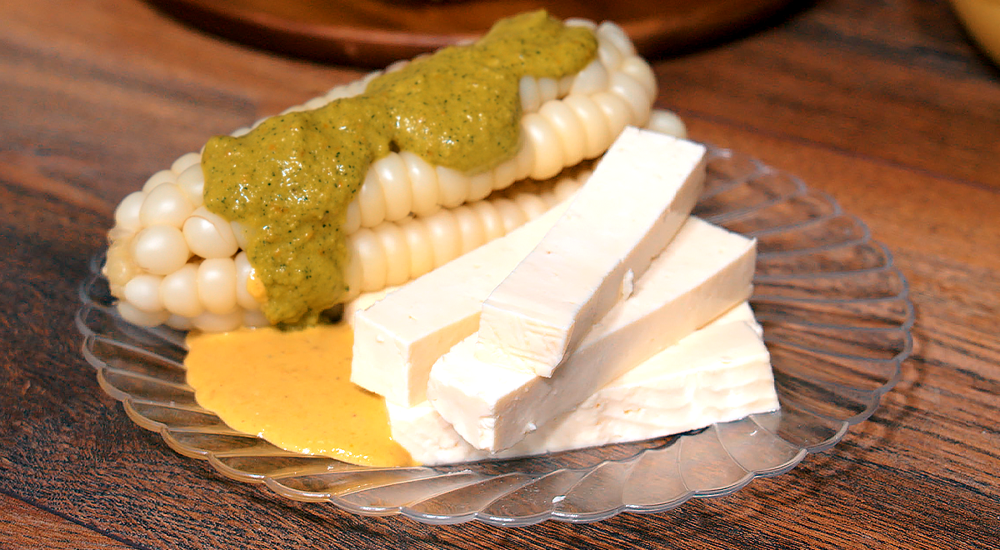Choclo tierno de Junín acompañado de queso artesanal de la región.
S/6.00
Platos Principales
Trucha Frita con Papas

Trucha dorada de los ríos altoandinos, servida con papas de colores.
S/22.00
Pachamanca
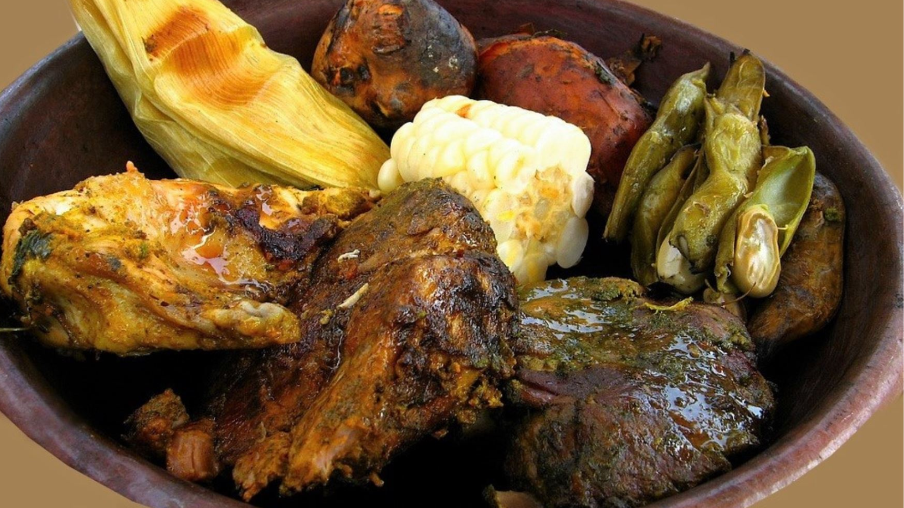Carnes, papas y habas cocidas bajo tierra con hierbas andinas como chincho.
S/35.00
Mondongo
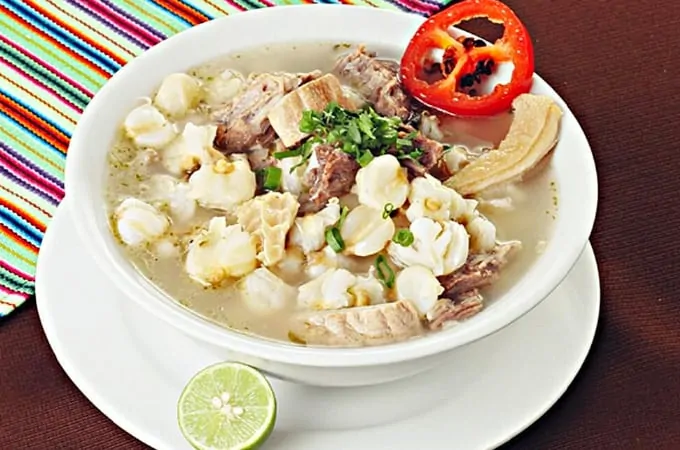Guiso tradicional de mote, panza de res, ají panca y hierbas aromáticas.
S/30.00
Cuy Chactado
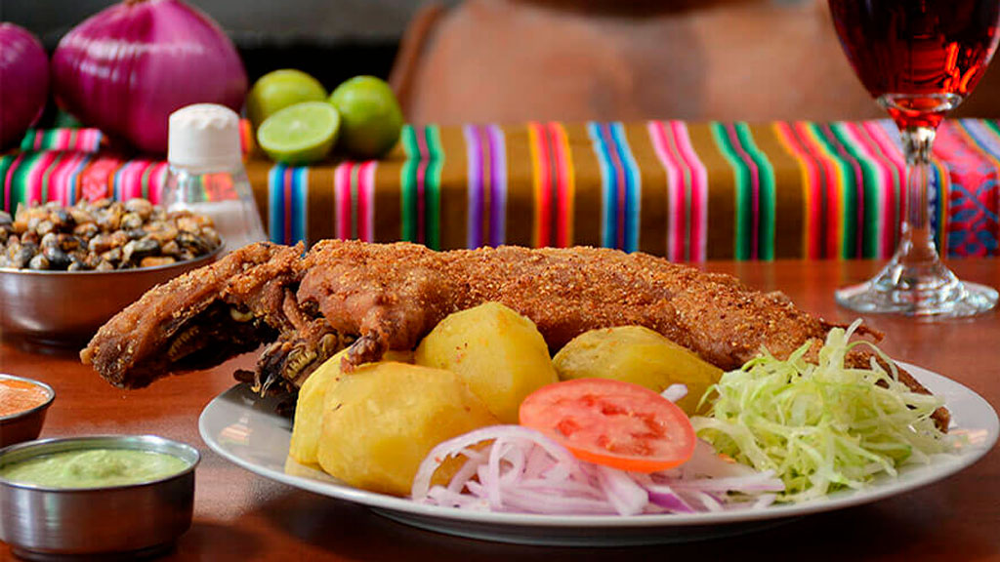Cuy entero frito al estilo serrano, acompañado de papas y ensalada.
S/35.00
Picante de Cuy
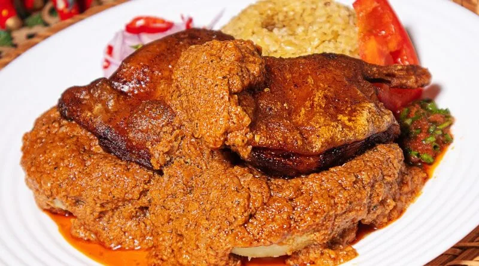Estofado con maní y ají amarillo, acompañado de papas sancochadas.
S/34.00
Chancho al Palo
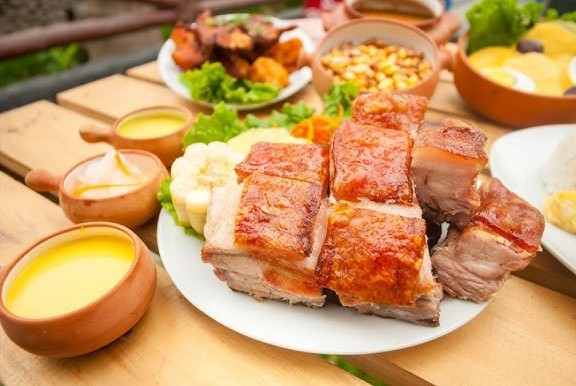Cerdo cocido a fuego lento sobre estacas, crocante por fuera y jugoso por dentro.
S/40.00
Bebidas
Chicha Morada
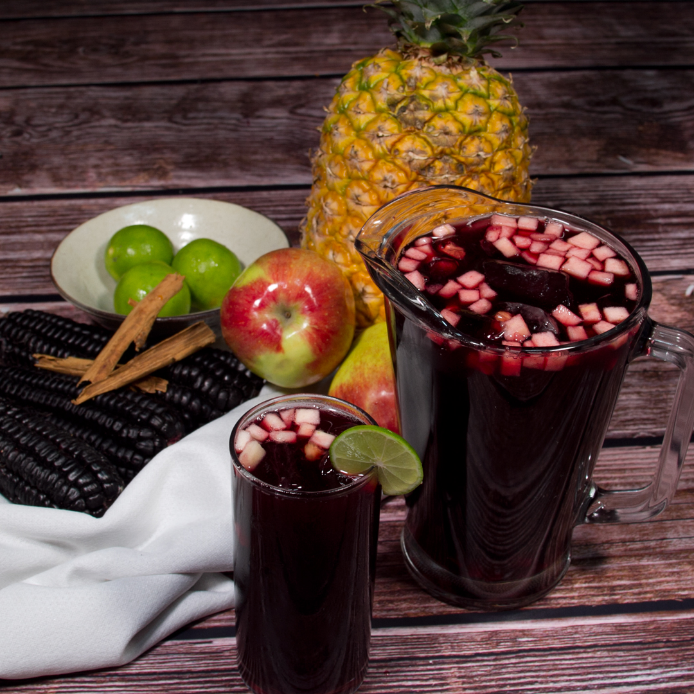Bebida refrescante de maíz morado con piña, canela y clavo.
S/5.00
Mate de Coca
Infusión andina ideal para combatir el mal de altura y relajarse.
S/4.00
Aguaymanto
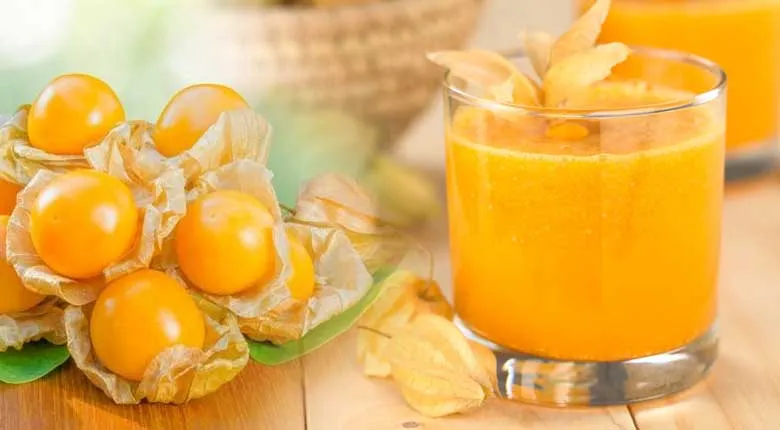Jugo natural de aguaymanto, fruta silvestre de los Andes.
S/6.00
Postres
Mazamorra Morada
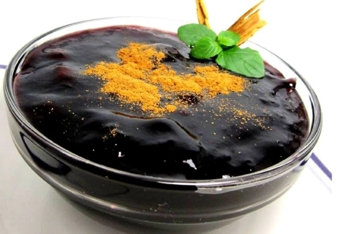Postre a base de maíz morado con frutas deshidratadas y canela.
S/6.00
Queso Helado Andino
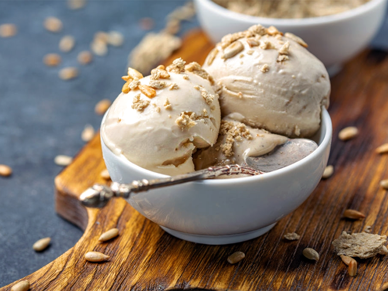Postre helado artesanal de leche fresca, canela y clavo.
S/7.00
Gelatinas

Gelatinas de sabores surtidos , refrescante y coloridas
S/4.00